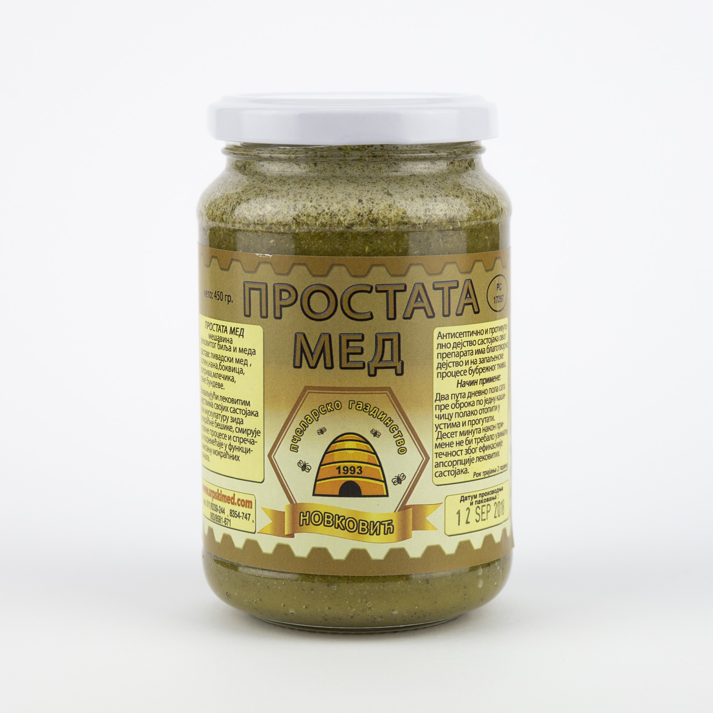

Bagremov med
"Podiže opštu snagu organizma,
budi vedro raspoloženje i brzo oporavlja telo posle fizičkih i
umnih napora. Koristi se kod stomačno - crevnih obolenja,
obolenja jetre i respiratornih infekcija. Može se koristiti
u zaceljivanju sitnih povreda i posekotina. "
Brohni med
"Stimulišu rad disajnih organa i uspešno
sanira respiratorne infekcije. Koristi se kod svih stanja nazeba,
bronhitisa i astme, upale grla i glasnih žica.
Pored toga, ublažava gušenja i proreduje asmaticne napade. "
Livadski med
"Jača organizam i povećava zaštitne i imune mehanizme.
Pokazuje dobro dejstvo kod oboljenja disajnih puteva,
gnojnih rana i ginekoloških oboljenja. Kao sredstvo
za iskašljavanje uzima se u vidu inhalacija, sirupa,
ili u prirodnom obliku. "
Suncokretov med
"Preporučuje se kod poremećaja u radu srca
i krvnih sudova,ljudima koji pate od visokog krvnog pritiska,
u slučajevima aritmije i loše cirkulacije. Zbog prirodnog bogatstva
polenom poželjan je kod prevencije problema sa prostatom."
Med sa zelenim orasima
"Nezamenjiv je lek kod smanjenog rada štitne žlezde,
za bolesti grla i respiratornog trakta,
posebno kod bronhitisa, kao i za povećanje imuniteta "

Šumski med
"Podiže nivo hemoglobina u krvi, povećava snagu srca
i izdržljivost krvnih sudova. Ovaj med se preporučuje i posle teških operacija,
a trudnicama tokom cele trudnoće. Šumski med ima i značaj protiv upalna svojstva,
pa pomaže i kod bolesti organa za mokrenje."

Prostata med
"Predstavlja mešavinu prirodnog meda, polena,
semena bundeve i lekovitog bilja . Zahvaljujući lekovitim sastojcimama
ova mešavina utiče na jačanje muskulature zidova mokraćne bešike."
Saće u medu
"Poboljšava imunitet i jača otpornost na prehlade.
Svojim delovanjem utiče na sluzokožu usne duplje i čisti zube od kamenca.
Prestavlja odlično sredstvo u borbi protiv upale sinusa, utiče na zarastanje
čireva i hemoroida i čisti pluća a bogat je i vitaminom A, "
Seme koprive u medu
"koristi se za lečenje anemije i malokrvnosti kod dece i odraslih.
Zahvaljujući bogatom mineralnom i vitaminskom sastavu koristi se veoma dugo
u tradicionalnoj narodnoj medecini."